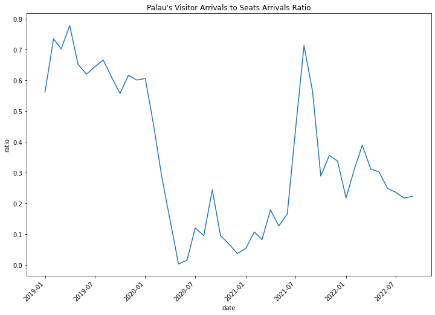
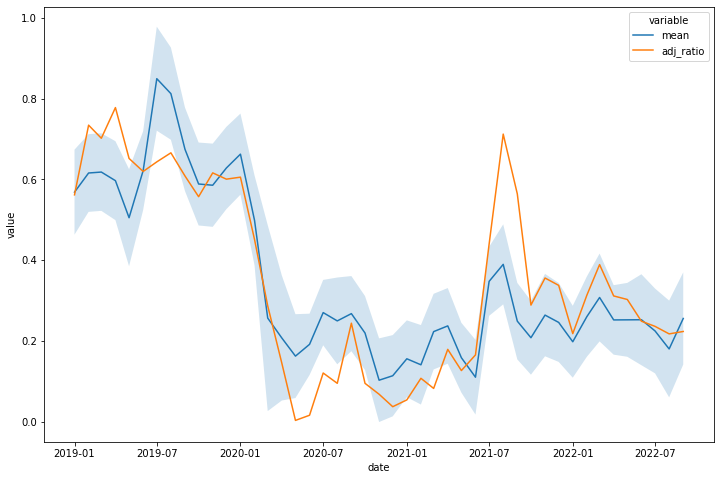

Palau#
import sys
sys.path.append('/Applications/Stata/utilities/')
from pystata import config
config.init('be')
VAR by PyStata#
import os
os.chdir("../../")
import numpy as np
import pandas as pd
import matplotlib.pyplot as plt
%%stata
ssc install schemepack, replace
checking schemepack consistency and verifying not already installed...
all files already exist and are up to date.
%%stata
clear all
global folder "/Users/czhang/Desktop/pacific-observatory"
** Save the palau_merged as tempfile for merging
import delimited using "$folder/data/tourism/palau/intermediate/palau_merged.csv",
generate time = m(2019m1) + _n-1
format time %tm
tempfile merged
save `merged'
** Merge with the Covid Stringency Index
import delimited using "$folder/data/tourism/oceania_covid_stringency.csv", clear
merge 1:1 date using `merged'
keep if _merge == 2 | _merge == 3
. clear all
. global folder "/Users/czhang/Desktop/pacific-observatory"
.
. ** Save the palau_merged as tempfile for merging
. import delimited using "$folder/data/tourism/palau/intermediate/palau_merged.
> csv",
(encoding automatically selected: ISO-8859-1)
(16 vars, 45 obs)
. generate time = m(2019m1) + _n-1
. format time %tm
. tempfile merged
. save `merged'
file /var/folders/kn/jw0y9v615mjgg3_51g3s73zh0000gn/T//St33319.000002 saved
as .dta format
.
. ** Merge with the Covid Stringency Index
. import delimited using "$folder/data/tourism/oceania_covid_stringency.csv", c
> lear
(encoding automatically selected: ISO-8859-1)
(5 vars, 38 obs)
. merge 1:1 date using `merged'
Result Number of obs
-----------------------------------------
Not matched 17
from master 5 (_merge==1)
from using 12 (_merge==2)
Matched 33 (_merge==3)
-----------------------------------------
. keep if _merge == 2 | _merge == 3
(5 observations deleted)
.
%%stata
// Drop the _merge variables
drop _merge v1
replace stringency_index = 0 if stringency_index == .
tsset time
// Generate Covid variable
gen covid = .
replace covid = 1 if date >= "2020m3"
. // Drop the _merge variables
. drop _merge v1
. replace stringency_index = 0 if stringency_index == .
(12 real changes made)
. tsset time
Time variable: time, 2019m1 to 2022m9
Delta: 1 month
.
. // Generate Covid variable
. gen covid = .
(45 missing values generated)
. replace covid = 1 if date >= "2020m3"
(21 real changes made)
.
%%stata
describe
Contains data
Observations: 45
Variables: 18
-------------------------------------------------------------------------------
Variable Storage Display Value
name type format label Variable label
-------------------------------------------------------------------------------
year int %8.0g
month byte %8.0g
stringency_in~x float %9.0g
date str10 %10s
seats_arriva~tl int %8.0g Seats_arrivals_intl
seats_arriva~al int %8.0g Seats_arrivals_total
number_of_fl~tl byte %8.0g Number_of_flights_intl
number_of_fl~al byte %8.0g Number_of_flights_total
japan int %8.0g JAPAN
southkorea int %8.0g SOUTH KOREA
taiwan int %8.0g TAIWAN
china int %8.0g CHINA
usacanada int %8.0g USA/CANADA
europe int %8.0g EUROPE
others int %8.0g OTHERS
total int %8.0g Total
time float %tm
covid float %9.0g
-------------------------------------------------------------------------------
Sorted by: time
Note: Dataset has changed since last saved.
%%stata
tsline (total seats_arrivals_intl), tline(2020m3) mcolor(%60) mlwidth(0) ///
title("{bf}Visitors Arrivals from 2019 to 2022", pos(11) size(3)) ///
xtitle("date") ytitle("Number") ///
legend(off) ///
scheme(white_tableau)
. tsline (total seats_arrivals_intl), tline(2020m3) mcolor(%60) mlwidth(0) ///
> title("{bf}Visitors Arrivals from 2019 to 2022", pos(11) size(3)) ///
> xtitle("date") ytitle("Number") ///
> legend(off) ///
> scheme(white_tableau)
.
%%stata
** employ dfuller to test stationarity
foreach x of varlist seats_arrivals_intl total{
dfuller `x'
}
. ** employ dfuller to test stationarity
. foreach x of varlist seats_arrivals_intl total{
2. dfuller `x'
3. }
Dickey–Fuller test for unit root Number of obs = 44
Variable: seats_arrival~tl Number of lags = 0
H0: Random walk without drift, d = 0
Dickey–Fuller
Test -------- critical value ---------
statistic 1% 5% 10%
--------------------------------------------------------------
Z(t) -1.663 -3.621 -2.947 -2.607
--------------------------------------------------------------
MacKinnon approximate p-value for Z(t) = 0.4505.
Dickey–Fuller test for unit root Number of obs = 44
Variable: total Number of lags = 0
H0: Random walk without drift, d = 0
Dickey–Fuller
Test -------- critical value ---------
statistic 1% 5% 10%
--------------------------------------------------------------
Z(t) -1.402 -3.621 -2.947 -2.607
--------------------------------------------------------------
MacKinnon approximate p-value for Z(t) = 0.5814.
.
%%stata
** Optimal lag selection
varsoc total seats_arrivals_intl, maxlag(12)
. ** Optimal lag selection
. varsoc total seats_arrivals_intl, maxlag(12)
Lag-order selection criteria
Sample: 2020m1 thru 2022m9 Number of obs = 33
+---------------------------------------------------------------------------+
| Lag | LL LR df p FPE AIC HQIC SBIC |
|-----+---------------------------------------------------------------------|
| 0 | -573.982 5.0e+12 34.908 34.9385 34.9987 |
| 1 | -535.12 77.724 4 0.000 6.0e+11 32.7951 32.8867 33.0672 |
| 2 | -530.99 8.2596 4 0.083 6.0e+11 32.7873 32.9399 33.2408 |
| 3 | -509.059 43.863 4 0.000 2.0e+11 31.7005 31.9141 32.3354* |
| 4 | -502.138 13.842 4 0.008 1.7e+11 31.5235 31.7981 32.3398 |
| 5 | -496.586 11.102 4 0.025 1.6e+11 31.4295 31.7652 32.4272 |
| 6 | -491.662 9.8486 4 0.043 1.6e+11 31.3735 31.7702 32.5525 |
| 7 | -489.818 3.688 4 0.450 1.9e+11 31.5041 31.9619 32.8646 |
| 8 | -484.425 10.787 4 0.029 1.9e+11 31.4197 31.9385 32.9615 |
| 9 | -482.766 3.3168 4 0.506 2.4e+11 31.5616 32.1414 33.2848 |
| 10 | -473.819 17.893 4 0.001 2.1e+11 31.2618 31.9026 33.1664 |
| 11 | -468.981 9.6764 4 0.046 2.4e+11 31.211 31.9129 33.297 |
| 12 | -452.678 32.607* 4 0.000 1.5e+11* 30.4653* 31.2282* 32.7327 |
+---------------------------------------------------------------------------+
* optimal lag
Endogenous: total seats_arrivals_intl
Exogenous: _cons
.
%%stata
** Vector Autogressive Models
var diff_total diff_seats_arrivals_intl, exog(stringency_index covid) dfk small
. ** Vector Autogressive Models
. var diff_total diff_seats_arrivals_intl, exog(stringency_index covid) dfk sma
> ll
note: covid omitted because of collinearity.
Vector autoregression
Sample: 2021m1 thru 2022m9 Number of obs = 21
Log likelihood = -304.5915 AIC = 30.15157
FPE = 4.40e+10 HQIC = 30.28111
Det(Sigma_ml) = 1.36e+10 SBIC = 30.74844
Equation Parms RMSE R-sq F P > F
----------------------------------------------------------------
diff_total 6 276.536 0.5346 3.44637 0.0285
diff_seats_arr~l 6 742.976 0.5293 3.373297 0.0306
----------------------------------------------------------------
------------------------------------------------------------------------------
| Coefficient Std. err. t P>|t| [95% conf. interval]
-------------+----------------------------------------------------------------
diff_total |
diff_total |
L1. | .3695045 .2894108 1.28 0.221 -.2473599 .986369
L2. | .0788767 .3355229 0.24 0.817 -.6362734 .7940268
|
diff_seats~l |
L1. | -.3889734 .1128063 -3.45 0.004 -.6294144 -.1485325
L2. | -.2176653 .1470382 -1.48 0.159 -.5310699 .0957393
|
stringency~x | -2.029657 6.563665 -0.31 0.761 -16.01978 11.96046
_cons | 226.9108 306.3119 0.74 0.470 -425.9776 879.7992
-------------+----------------------------------------------------------------
diff_seats~l |
diff_total |
L1. | 1.401272 .7775672 1.80 0.092 -.2560731 3.058617
L2. | 1.385345 .9014577 1.54 0.145 -.5360669 3.306756
|
diff_seats~l |
L1. | -1.199343 .3030795 -3.96 0.001 -1.845342 -.5533444
L2. | -.8312882 .3950513 -2.10 0.053 -1.67332 .0107437
|
stringency~x | -17.15659 17.63476 -0.97 0.346 -54.7442 20.43102
_cons | 1194.462 822.9759 1.45 0.167 -559.6695 2948.594
------------------------------------------------------------------------------
.
%%stata
irf create var1, step(12) set($folder/scripts/notebooks/tourism/modelling/palau_irf) replace
irf graph oirf, ///
impulse(diff_seats_arrivals_intl) response(diff_total) ///
yline(0,lcolor(black)) xlabel(0(3)12) byopts(yrescale) ///
scheme(white_tableau)
. irf create var1, step(12) set($folder/scripts/notebooks/tourism/modelling/pal
> au_irf) replace
(file /Users/czhang/Desktop/pacific-observatory/scripts/notebooks/tourism/model
> ling/palau_irf.irf now active)
(file /Users/czhang/Desktop/pacific-observatory/scripts/notebooks/tourism/model
> ling/palau_irf.irf updated)
. irf graph oirf, ///
> impulse(diff_seats_arrivals_intl) response(diff_total) ///
> yline(0,lcolor(black)) xlabel(0(3)12) byopts(yrescale) ///
> scheme(white_tableau)
.
%%stata
** Robustness Check
varstable
predict error, residual
. ** Robustness Check
. varstable
Eigenvalue stability condition
+----------------------------------------+
| Eigenvalue | Modulus |
|--------------------------+-------------|
| .06269116 + .7198751i | .7226 |
| .06269116 - .7198751i | .7226 |
| -.4776104 + .4730879i | .672253 |
| -.4776104 - .4730879i | .672253 |
+----------------------------------------+
All the eigenvalues lie inside the unit circle.
VAR satisfies stability condition.
. predict error, residual
(3 missing values generated)
.
%%stata
tsline error, ///
title("Residual Over Time", pos(11) size(3)) ///
scheme(white_tableau)
. tsline error, ///
> title("Residual Over Time", pos(11) size(3)) ///
> scheme(white_tableau)
.

%%stata
** check autocorrelation at lag
varlmar
. ** check autocorrelation at lag
. varlmar
Lagrange-multiplier test
+--------------------------------------+
| lag | chi2 df Prob > chi2 |
|------+-------------------------------|
| 1 | 9.6931 4 0.04593 |
| 2 | 6.2212 4 0.18323 |
+--------------------------------------+
H0: no autocorrelation at lag order
.
Ratio#
filedir = os.getcwd() + "/data/tourism/palau/intermediate/"
filepaths = [filedir + file for file in os.listdir(filedir) if ".csv" in file]
filepaths
oceania_index = (pd.read_csv(os.getcwd() + "/data/tourism/oceania_covid_stringency.csv")
.drop("Unnamed: 0", axis=1))
oceania_index["date"] = pd.to_datetime(oceania_index["date"])
oceania_index.head(5)
| year | month | stringency_index | date | |
|---|---|---|---|---|
| 0 | 2020 | 1 | 6.485000 | 2020-01-01 |
| 1 | 2020 | 2 | 18.961379 | 2020-02-01 |
| 2 | 2020 | 3 | 41.960753 | 2020-03-01 |
| 3 | 2020 | 4 | 82.458000 | 2020-04-01 |
| 4 | 2020 | 5 | 64.930000 | 2020-05-01 |
gt = pd.read_csv(
os.getcwd() + "/data/tourism/trends/trends_palau.csv").drop("Unnamed: 0", axis=1)
gt["date"] = pd.to_datetime(gt["date"])
gt.head(5)
| date | palau flights-AU | palau hotel-AU | palau travel-AU | palau flights-NZ | palau hotel-NZ | palau travel-NZ | palau flights-US | palau hotel-US | palau travel-US | ... | palau travel-JP | palau flights-HK | palau hotel-HK | palau travel-HK | palau flights-NC | palau hotel-NC | palau travel-NC | palau flights | palau hotel | palau travel | |
|---|---|---|---|---|---|---|---|---|---|---|---|---|---|---|---|---|---|---|---|---|---|
| 0 | 2004-01-01 | 0 | 0 | 0 | 0 | 0 | 0 | 0 | 23 | 0 | ... | 0 | 0 | 0 | 0 | 0 | 0 | 0 | 0.0 | 3.155717 | 3.055298 |
| 1 | 2004-02-01 | 0 | 0 | 0 | 0 | 0 | 0 | 0 | 0 | 28 | ... | 0 | 0 | 0 | 0 | 0 | 0 | 0 | 0.0 | 5.111154 | 2.142547 |
| 2 | 2004-03-01 | 0 | 63 | 0 | 0 | 0 | 0 | 0 | 0 | 0 | ... | 0 | 0 | 90 | 0 | 0 | 0 | 0 | 0.0 | 6.132983 | 2.768303 |
| 3 | 2004-04-01 | 0 | 0 | 0 | 0 | 0 | 0 | 0 | 0 | 100 | ... | 0 | 0 | 0 | 0 | 0 | 0 | 0 | 0.0 | 10.537711 | 0.000000 |
| 4 | 2004-05-01 | 0 | 0 | 0 | 0 | 0 | 0 | 22 | 0 | 0 | ... | 0 | 0 | 0 | 0 | 0 | 0 | 0 | 0.0 | 7.344062 | 0.000000 |
5 rows × 22 columns
palau_merged = pd.read_csv(filepaths[0]).drop(["Unnamed: 0", "Date"], axis=1)
palau_merged["date"] = [str(year) + '-' + str(month)
for year, month in zip(palau_merged.Year, palau_merged.Month)]
palau_merged["date"] = pd.to_datetime(palau_merged["date"])
palau_merged = (palau_merged.merge(oceania_index, how="left", on="date")
.merge(gt.iloc[:, [0, -3, -2, -1]], how="left", on="date")
.drop(["year", "month"], axis=1)
.fillna(0))
palau_merged["covid"] = (palau_merged["date"] >= "2020-03-12").astype(int)
palau_merged.columns = [col.lower() for col in palau_merged.columns]
palau_merged.head(5)
| year | month | seats_arrivals_intl | seats_arrivals_total | number_of_flights_intl | number_of_flights_total | japan | south korea | taiwan | china | usa/canada | europe | others | total | date | stringency_index | palau flights | palau hotel | palau travel | covid | |
|---|---|---|---|---|---|---|---|---|---|---|---|---|---|---|---|---|---|---|---|---|
| 0 | 2019 | 1 | 13048.0 | 13048.0 | 75.0 | 75.0 | 1953.0 | 1169.0 | 919.0 | 2072.0 | 626.0 | 310.0 | 280.0 | 7329.0 | 2019-01-01 | 0.0 | 0.493228 | 2.559978 | 0.194222 | 0 |
| 1 | 2019 | 2 | 13281.0 | 13281.0 | 74.0 | 74.0 | 2055.0 | 1035.0 | 1092.0 | 4059.0 | 702.0 | 438.0 | 371.0 | 9752.0 | 2019-02-01 | 0.0 | 0.310671 | 2.841414 | 0.282245 | 0 |
| 2 | 2019 | 3 | 12870.0 | 12870.0 | 73.0 | 73.0 | 2434.0 | 1090.0 | 1190.0 | 2549.0 | 826.0 | 483.0 | 461.0 | 9033.0 | 2019-03-01 | 0.0 | 0.386389 | 2.921431 | 0.286529 | 0 |
| 3 | 2019 | 4 | 10806.0 | 10806.0 | 64.0 | 64.0 | 1756.0 | 808.0 | 1099.0 | 3182.0 | 777.0 | 368.0 | 415.0 | 8405.0 | 2019-04-01 | 0.0 | 0.293529 | 2.981907 | 0.338945 | 0 |
| 4 | 2019 | 5 | 11472.0 | 11472.0 | 67.0 | 67.0 | 1288.0 | 1095.0 | 1393.0 | 2489.0 | 607.0 | 185.0 | 421.0 | 7478.0 | 2019-05-01 | 0.0 | 0.306351 | 3.537987 | 0.168664 | 0 |
palau_merged["ratio"] = (palau_merged["total"])/(palau_merged["seats_arrivals_intl"])
import seaborn as sns
fig, ax = plt.subplots(figsize=(12,8))
sns.lineplot(data=palau_merged, x="date", y="ratio")
plt.xticks(rotation=45, ha='right')
plt.title("Palau's Visitor Arrivals to Seats Arrivals Ratio")
plt.show()

adj_ratio = []
for idx, ratio in enumerate(palau_merged["ratio"]):
if ratio < 1:
adj_ratio.append(ratio)
else:
ratio = ((palau_merged["ratio"][idx-1] + palau_merged["ratio"][idx+1]))/2
adj_ratio.append(ratio)
palau_merged["adj_ratio"] = adj_ratio
from scripts.python.ts_utils import get_adf_df
get_adf_df(palau_merged, ["adj_ratio"])
| Test Statistic | p-value | # Lags Used | Number of Observations Used | Critical Value (1%) | Critical Value (5%) | Critical Value (10%) | |
|---|---|---|---|---|---|---|---|
| adj_ratio | -2.259475 | 0.185371 | 1.0 | 43.0 | -3.592504 | -2.93155 | -2.604066 |
temp = palau_merged[["ratio", "adj_ratio", "stringency_index", "date"]].reset_index()
temp["covid"] = (temp.date >= "2020-03-12")
temp["quarter"] = temp["date"].dt.quarter
temp = (temp.merge(gt[["date", "palau travel"]], how="left", on="date")
.rename({"palau travel": "palau_travel"}, axis=1))
temp.head(5)
| index | ratio | adj_ratio | stringency_index | date | covid | quarter | palau_travel | |
|---|---|---|---|---|---|---|---|---|
| 0 | 0 | 0.561695 | 0.561695 | 0.0 | 2019-01-01 | False | 1 | 0.194222 |
| 1 | 1 | 0.734282 | 0.734282 | 0.0 | 2019-02-01 | False | 1 | 0.282245 |
| 2 | 2 | 0.701865 | 0.701865 | 0.0 | 2019-03-01 | False | 1 | 0.286529 |
| 3 | 3 | 0.777809 | 0.777809 | 0.0 | 2019-04-01 | False | 2 | 0.338945 |
| 4 | 4 | 0.651848 | 0.651848 | 0.0 | 2019-05-01 | False | 2 | 0.168664 |
import statsmodels.formula.api as smf
res = smf.wls(
formula="adj_ratio ~ covid * stringency_index + C(quarter) + palau_travel", data=temp).fit()
res.summary()
| Dep. Variable: | adj_ratio | R-squared: | 0.762 |
|---|---|---|---|
| Model: | WLS | Adj. R-squared: | 0.717 |
| Method: | Least Squares | F-statistic: | 16.95 |
| Date: | Tue, 18 Apr 2023 | Prob (F-statistic): | 8.36e-10 |
| Time: | 16:31:20 | Log-Likelihood: | 34.253 |
| No. Observations: | 45 | AIC: | -52.51 |
| Df Residuals: | 37 | BIC: | -38.05 |
| Df Model: | 7 | ||
| Covariance Type: | nonrobust |
| coef | std err | t | P>|t| | [0.025 | 0.975] | |
|---|---|---|---|---|---|---|
| Intercept | 0.4637 | 0.074 | 6.305 | 0.000 | 0.315 | 0.613 |
| covid[T.True] | -0.5484 | 0.105 | -5.240 | 0.000 | -0.760 | -0.336 |
| C(quarter)[T.2] | -0.0496 | 0.055 | -0.908 | 0.370 | -0.160 | 0.061 |
| C(quarter)[T.3] | 0.0487 | 0.056 | 0.865 | 0.392 | -0.065 | 0.163 |
| C(quarter)[T.4] | 0.0115 | 0.059 | 0.196 | 0.846 | -0.107 | 0.130 |
| stringency_index | -0.0087 | 0.003 | -2.855 | 0.007 | -0.015 | -0.003 |
| covid[T.True]:stringency_index | 0.0116 | 0.004 | 3.184 | 0.003 | 0.004 | 0.019 |
| palau_travel | 0.5390 | 0.178 | 3.029 | 0.004 | 0.178 | 0.900 |
| Omnibus: | 6.243 | Durbin-Watson: | 0.575 |
|---|---|---|---|
| Prob(Omnibus): | 0.044 | Jarque-Bera (JB): | 5.029 |
| Skew: | 0.686 | Prob(JB): | 0.0809 |
| Kurtosis: | 3.894 | Cond. No. | 574. |
Notes:
[1] Standard Errors assume that the covariance matrix of the errors is correctly specified.
ratio_pred = res.get_prediction().summary_frame()
ratio_stats = pd.concat([temp, ratio_pred], axis=1)
ratio_stats.head(5)
| index | ratio | adj_ratio | stringency_index | date | covid | quarter | palau_travel | mean | mean_se | mean_ci_lower | mean_ci_upper | obs_ci_lower | obs_ci_upper | |
|---|---|---|---|---|---|---|---|---|---|---|---|---|---|---|
| 0 | 0 | 0.561695 | 0.561695 | 0.0 | 2019-01-01 | False | 1 | 0.194222 | 0.568387 | 0.051942 | 0.463144 | 0.673631 | 0.294774 | 0.842001 |
| 1 | 1 | 0.734282 | 0.734282 | 0.0 | 2019-02-01 | False | 1 | 0.282245 | 0.615828 | 0.047496 | 0.519592 | 0.712064 | 0.345551 | 0.886105 |
| 2 | 2 | 0.701865 | 0.701865 | 0.0 | 2019-03-01 | False | 1 | 0.286529 | 0.618136 | 0.047401 | 0.522092 | 0.714181 | 0.347928 | 0.888345 |
| 3 | 3 | 0.777809 | 0.777809 | 0.0 | 2019-04-01 | False | 2 | 0.338945 | 0.596816 | 0.048248 | 0.499057 | 0.694575 | 0.325993 | 0.867639 |
| 4 | 4 | 0.651848 | 0.651848 | 0.0 | 2019-05-01 | False | 2 | 0.168664 | 0.505042 | 0.059329 | 0.384831 | 0.625253 | 0.225330 | 0.784754 |
ratio_viz_df = ratio_stats[["mean", "adj_ratio", "date"]].melt(id_vars="date")
fig, ax = plt.subplots(figsize=(12,8))
sns.lineplot(data=ratio_viz_df, x="date", y="value", hue="variable")
ax.fill_between(data=ratio_stats, x="date", y1="mean_ci_lower", y2="mean_ci_upper", alpha=0.2)
plt.show()
